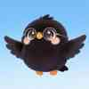
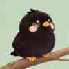
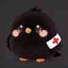
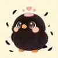
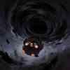
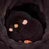
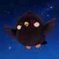
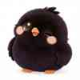
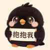

鸦格社区
发现你此刻的心境
每一种心境，都是此刻真实的你
什么是鸦格？
鸦格是小鸦的12种心境状态，是你此刻内心的真实写照。
心境如云，时卷时舒。此刻的你，是哪一种心境？
测一测，发现你此刻的心境状态。
12种鸦格图鉴
🌟 振翅高飞鸦
积极进取
目标明确
此刻的你心中有火，眼里有光，每一步都在靠近想要的自己。风刚好，方向刚好，你也刚好。

🔭 巡天智者鸦
沉静思考
俯瞰全局
此刻的你选择旁观世界，不是冷漠，是懂得有些事看清比参与更重要。

🪹 蹲枝观望鸦
犹豫不决
等待时机
此刻的你选择等待，不是犹豫，是在等一个值得全力以赴的瞬间。风会来的，你要等。
🌫️ 迷雾盘旋鸦
迷茫困惑
寻找方向
此刻的你在迷雾中摸索前行，没关系，谁的成长不是从迷路开始的呢？

🩹 折翼停飞鸦
受挫低落
需要疗愈
此刻的你选择停下来喘息，没关系的。能承认自己累了，本身就是一种勇敢。

🪶 脱毛换羽鸦
成长阵痛
自我更新
此刻的你在新旧之间拉扯，有点狼狈。但每一根新羽毛，都是重生的证据。

🌀 漩涡坠落鸦
焦虑纠结
思绪混乱
此刻的你脑子停不下来，像有无数个自己在吵架。没关系，先让思绪飞一会儿吧。

🕳️ 洞穴隐居鸦
内向充电
享受独处
此刻的你只想一个人待着，没关系。世界偶尔也需要你缺席一下，休息是合法的。

🌙 夜游梦呓鸦
灵感迸发
创意活跃
此刻的你脑子里装满了星星，灵感在黑夜里跳舞。这是属于你的高光时刻，抓住它们。
🤫 失声静默鸦
无言以对
内心丰富
此刻的你选择闭口不言，心里却装着整个世界。有些话，留给懂的人听就好。

😴 假寐装傻鸦
大智若愚
韬光养晦
此刻的你睁一只眼闭一只眼，有些事情，看穿不说穿，也是一种温柔。

🥰 伪装讨喜鸦
社交面具
渴望认可
此刻的你想要让所有人都满意，但最该被讨好的，其实是你自己呀。
📡 网络连接已断开，请检查网络设置